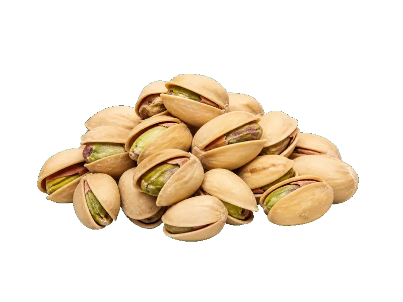

Orzechy
Pistacje prażone solone
Pistacje prażone solone: 21 g białka, 572 kcal, 28 g węglowodanów i 46 g tłuszczu na 100 g. Kategoria: Orzechy.
Kalorie572 kcalna 100 g
Białko / proteiny21 g
Węglowodany28 g
Tłuszcz46 g
Cena (szac.)~8,30 złza 100 g
Ceny zaktualizowano: maj 2026 (szacunek — ceny w popularnych supermarketach)
Porcja: garść (30g)
| Kalorie | 172 kcal |
|---|---|
| Białko | 6.3 g |
| Węglowodany | 8.4 g |
| Tłuszcz | 13.8 g |
| Cena (szac.) | ~2,49 zł |
Szczegółowe składniki odżywcze na 100 g
| Wartość energetyczna (kalorie) | 572 kcal |
|---|---|
| Białko (proteiny) | 21 g |
| Węglowodany | 28 g |
| Tłuszcz | 46 g |
| Tłuszcze nasycone | 5.5 g |
| Tłuszcze nienasycone | 40.5 g |
| Witaminy i minerały (skrót) | Miedź, Witamina B6, Mangan |
| Współczynnik kcal / 1 g białka | 27.2 |
| Cena produktu (szac. za 100 g) | ~8,30 zł |
| Cena za 100 g białka (szac.) | ~39,52 zł |
Witaminy i minerały na 100 g
Ilość w 100 g produktu oraz orientacyjny % dziennego zapotrzebowania (RDA) dla dorosłej osoby. Żelazo wg normy dla kobiet; sód jako % limitu. Wartości typowe (USDA / tabele żywieniowe / etykiety) — mogą się różnić między markami.
-
Witamina E 8 mg
-
Witamina K 5 µg
-
Witamina B1 (tiamina) 0.4 mg
-
Witamina B3 (niacyna) 2 mg
-
Witamina B6 1.7 mg
-
Witamina B9 (foliany) 40 µg
-
Wapń 80 mg
-
Żelazo 3 mg
-
Magnez 121 mg
-
Fosfor 490 mg
-
Potas 1025 mg
-
Cynk 3 mg
-
Selen 8 µg
-
Miedź 1300 µg
-
Mangan 2 mg